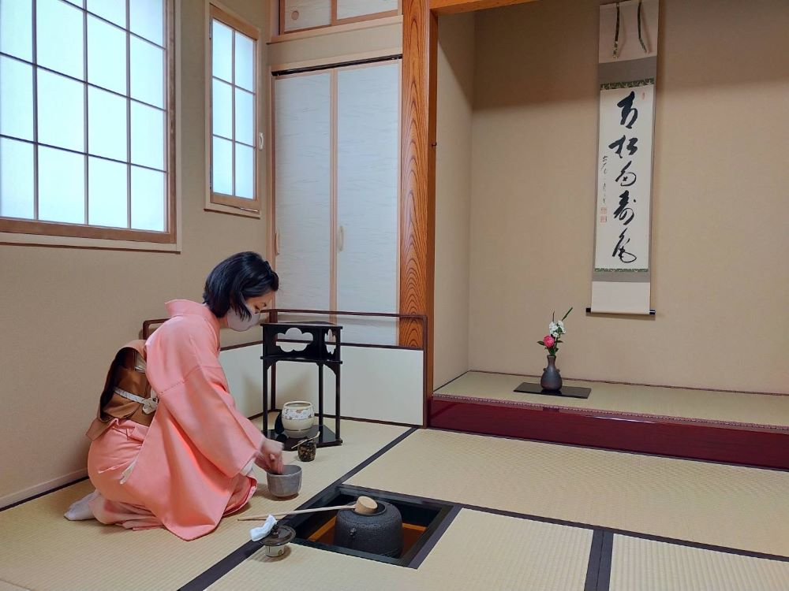

千利休の子孫たちが作った「裏千家」・「表千家」・「武者小路千家」は、三千家と呼ばれる茶道の代表的な流派です。
①裏千家
裏千家（うらせんけ）は、時代に合わせた風潮を積極的に取り入れるのが特徴の流派です。
裏通りに面している茶室であることから「裏千家」と呼ばれるようになりました。裏千家では、茶道を「ちゃどう」と読むのが一般的です。
②表千家
表千家（おもてせんけ）は、古くからの作法を忠実に守っているのが特徴の流派です。
表通りに面していた茶室であることから「表千家」と呼ばれるようになりました。表千家では、茶道を「さどう」と呼ぶのが一般的です。
③武者小路千家
武者小路千家（むしゃこうじせんけ）は無駄のない、合理的な所作が特徴の流派です。
武者小路という通りにある茶室であったことが名前の由来。武者小路千家の茶室は何度も消失し、建て直しを繰り返してきました。
その度に茶室の無駄をなくしてきたことから、必要のない所作を省き、合理的な動きを重視するように。
茶道の呼び方は「ちゃどう」・「さどう」どちらでも構いませんが、原則的には「茶の湯」と呼びます。